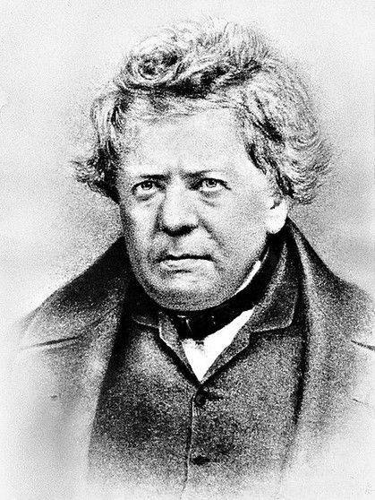
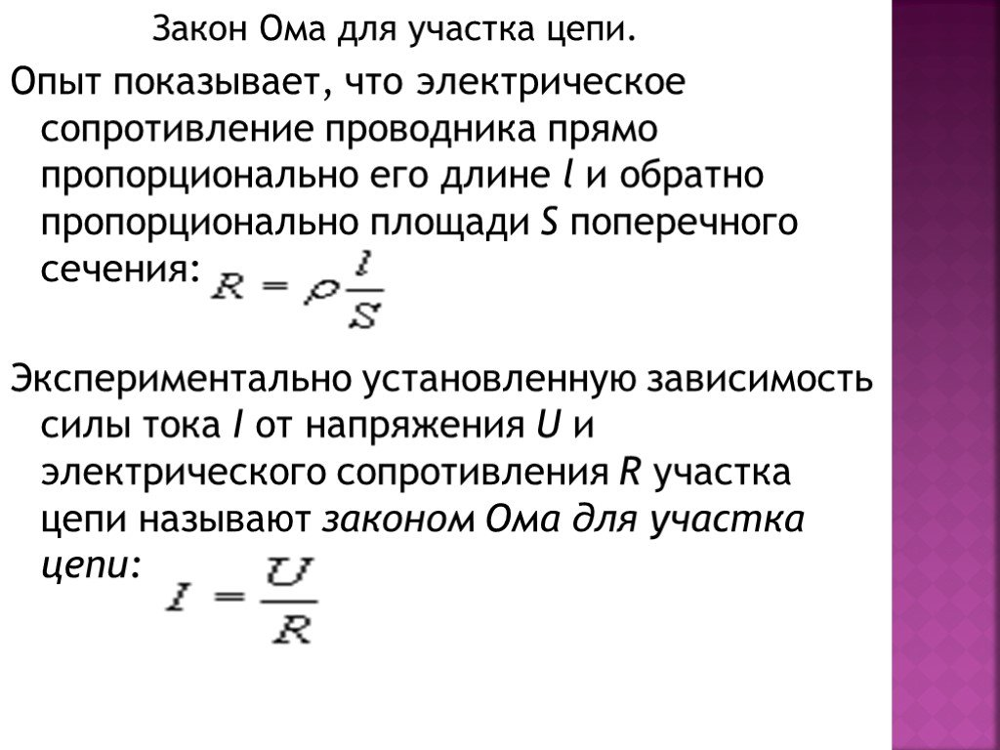
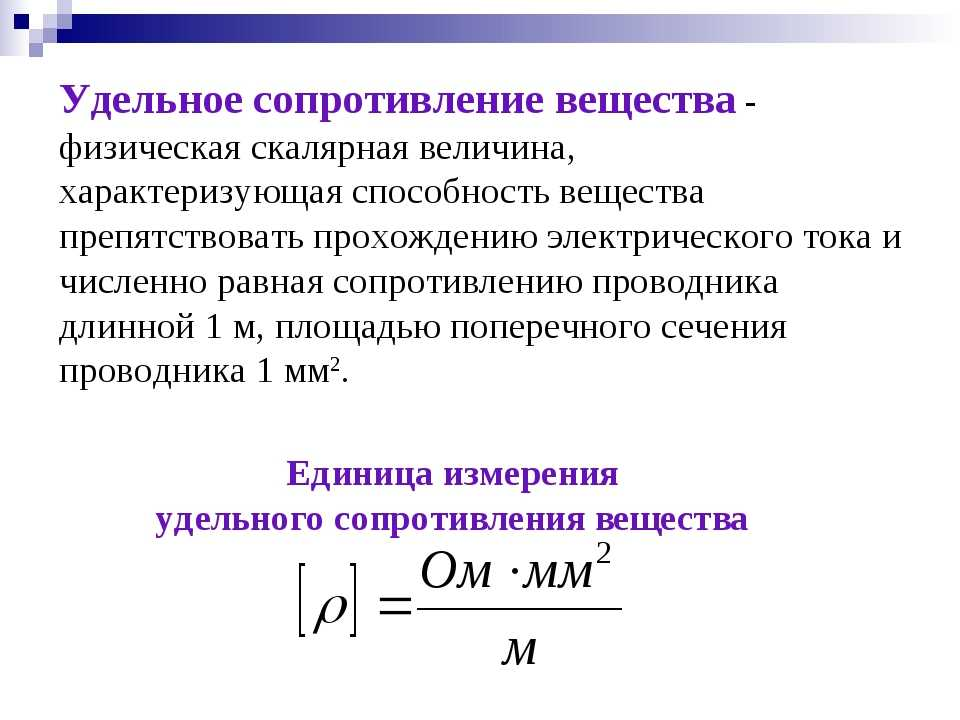
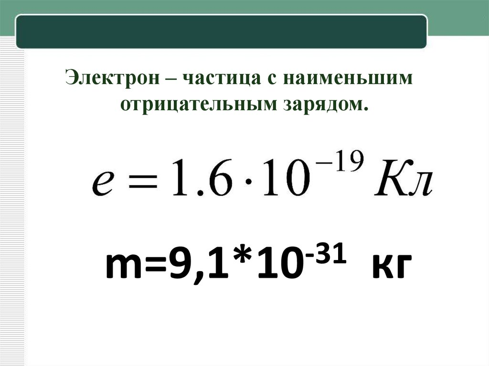
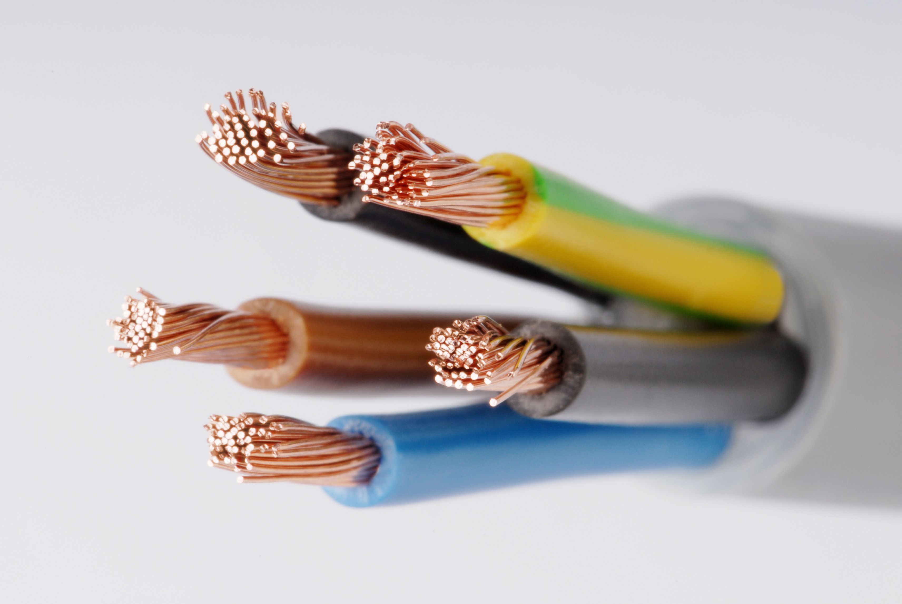
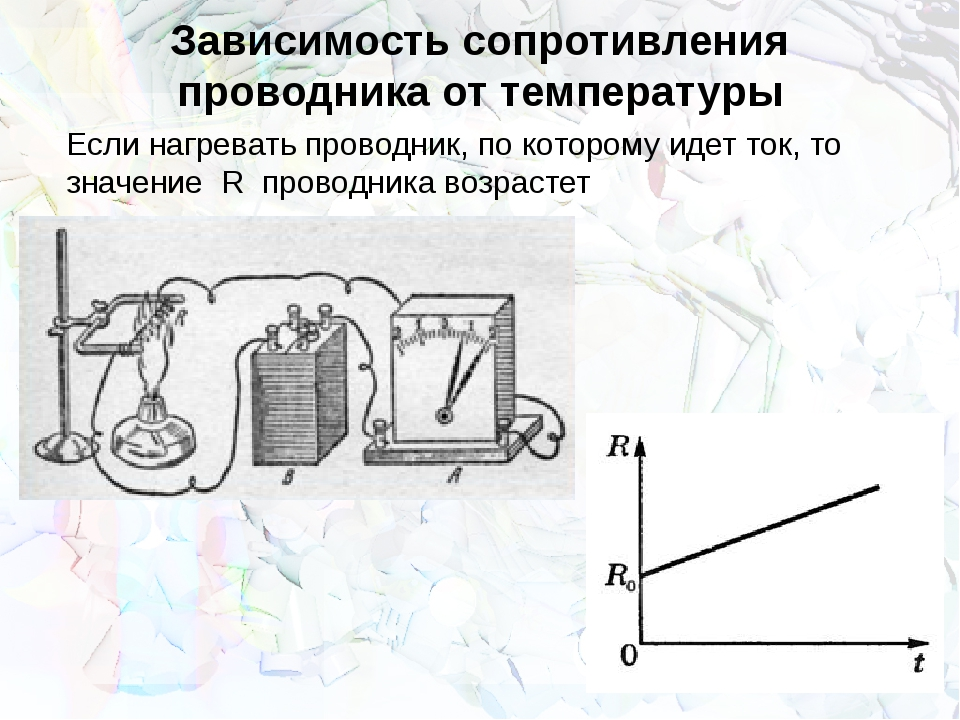

Георг Ом
Георг Симон Ом (Georg Simon Ohm) был немецким физиком и математиком, родившимся 16 марта 1789 года в Эрленбахе, Бавария. Он стал одним из величайших ученых в области электричества и предложил одно из самых важных открытий в этой области — закон Ома. Ом начал свою научную карьеру как учитель математики, но вскоре проявил интерес к электричеству. Его работа в этой области началась с изучения экспериментов, проводимых другими учеными. В результате своих наблюдений и экспериментов Ом сформулировал закон, который сейчас называется законом Ома. Закон Ома устанавливает связь между электрическим напряжением, силой тока и сопротивлением в электрической цепи. Он гласит, что сила тока, протекающего через проводник, прямо пропорциональна напряжению и обратно пропорциональна сопротивлению. Формула, описывающая закон Ома, выглядит следующим образом: I = V/R, где I - сила тока, V - напряжение, а R - сопротивление. Открытие закона Ома имело огромное значение для развития науки и техники. Оно позволило ученым лучше понять и объяснить феномены, связанные с электричеством, и стало основой для разработки множества электрических устройств и систем. Закон Ома применяется во всех областях, где используется электричество, включая электронику, электротехнику, телекоммуникации и многое другое. Ом провел множество экспериментов и исследований, чтобы подтвердить свой закон. Он разработал и построил собственные электрические цепи и приборы для измерения напряжения и силы тока. Ом также сделал важное открытие, что сопротивление проводника зависит от его материала и размеров, а также от температуры. Это открытие привело к развитию новых материалов с определенными электрическими свойствами и способностями. В 1827 году Ом опубликовал свою наиболее известную работу "Die galvanische Kette, mathematisch bearbeitet" (Гальваническая цепь, математически обработанная), в которой подробно описал свои открытия и эксперименты. Однако, несмотря на важность его работы, она не получила широкого признания в то время. Впоследствии, в 1841 году, Ом был приглашен на должность профессора физики в Университете Мюнхена, где он продолжил свои исследования и преподавательскую деятельность. В Мюнхене Ом стал более известным и получил признание своих достижений в области электричества. Он был уважаемым ученым и преподавателем, вдохновляя многих студентов своими знаниями и страстью к науке. Георг Ом умер 6 июля 1854 года в Мюнхене, но его научное наследие живет до сих пор. Закон Ома остается одним из основных принципов в изучении электричества и электроники. Его открытие стало отправной точкой для разработки более сложных теорий и аппаратуры, и его влияние простирается на множество областей, включая энергетику, светотехнику, силовую электронику и даже в медицинских приборах. Георг Ом оставил неизгладимый след в научном мире, и его вклад в развитие электротехники и электроники по-прежнему ценится и уважается. Его открытие закона Ома является ключевым элементом в понимании и применении электричества, и его имя останется навсегда связанным с этой важной областью науки.
Закон Ома
Закон Ома для участка цепи. Опыт показывает, что электрическое сопротивление проводника прямо пропорционально его длине l и обратно пропорционально площади S поперечного сечения.
Удельное сопротивление
Удельное сопротивление — это сопротивление единичного образца материала при единичной длине и площади поперечного сечения. Он является важным параметром для характеристики электрических материалов. Удельное сопротивление (ρ) материала определяется формулой: ρ = R * S / L.
Заряд электрона
Заряд электрона (e) является элементарным электрическим зарядом частицы. Он является основной единицей измерения электрического заряда и имеет фундаментальное значение в физике.
Значение заряда электрона составляет примерно 1.602 * 10-19 кулон. Это означает, что заряд одного электрона равен данному числу кулонов. Знание этого значения позволяет проводить расчеты и измерения в области электрических явлений.
Заряд электрона является отрицательным. В классической модели атома, электроны обращаются вокруг положительно заряженного ядра. Заряд ядра атома равен сумме зарядов всех электронов внутри атома, чтобы общий заряд атома был нейтральным.
Заряд электрона играет ключевую роль в электродинамике и электростатике. Он определяет взаимодействие между заряженными частицами и является основой для понимания явлений, таких как электрический ток, электромагнитное излучение и электростатические силы.
Заряд электрона также имеет важное значение в области электроники и современных технологий. Он является основой для работы полупроводниковых материалов, таких как кремний, в которых электроны могут быть контролируемым образом перемещены и управляемы для создания электронных компонентов и устройств.
Проводники
Проводники - это материалы, которые обладают высокой проводимостью электрического тока. Они играют важную роль в различных аспектах нашей жизни и широко используются в различных электрических устройствах и системах передачи энергии.
Свойства проводников связаны с наличием свободно движущихся электронов внутри материала. Одно из главных свойств проводников - это их способность эффективно проводить электрический ток. Проводники предоставляют малое сопротивление для прохождения электрического тока, что обеспечивает эффективную передачу энергии. Кроме того, многие проводники также обладают хорошей теплопроводностью, что позволяет им эффективно распространять тепло.
Применение проводников разнообразно. Они широко используются для производства электрических проводов и кабелей. Медь и алюминий, например, являются одними из наиболее распространенных проводников, используемых в электротехнике. Они обеспечивают надежную и эффективную передачу электрического тока в различных электрических системах.
Проводники также находят применение в различных электронных устройствах, включая компьютеры, телефоны, телевизоры и другие электронные приборы. Они используются для соединения компонентов и передачи электрического сигнала внутри электронных устройств.
Кроме того, проводники играют важную роль в энергетике. Они применяются в системах передачи электроэнергии, таких как электрические линии передачи и подстанции. Проводники с высокой проводимостью обеспечивают эффективную передачу электроэнергии на большие расстояния с минимальными потерями.
Схема установки
Элементы установки
Экспериментальная установка включает горелку, стойку, омметр и термометр. Каждый из этих элементов играет свою уникальную роль в измерениях удельного сопротивления металлов при их нагревании.